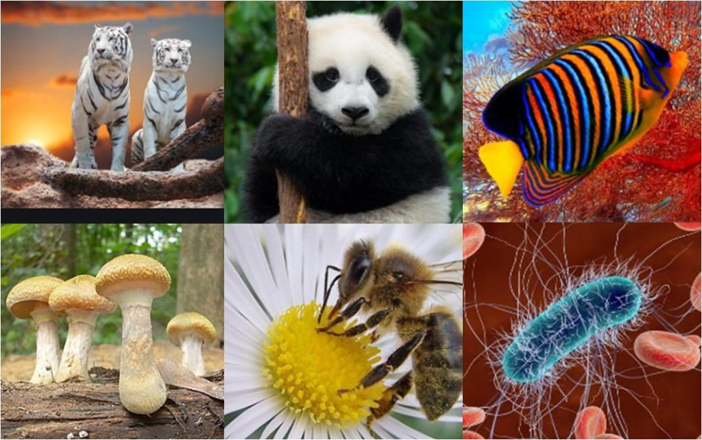

DEFINICION DE LA NATURALEZA |
||||
La naturaleza se refiere al conjunto de elementos y seres vivos que componen nuestro entorno físico y biológico. Incluye desde los fenómenos atmosféricos hasta los ecosistemas más complejos. La naturaleza es un sistema interconectado en el que los seres vivos y su entorno interactúan en equilibrio. Abarca desde los majestuosos paisajes hasta la biodiversidad que alberga. La naturaleza no solo es vital para la supervivencia, sino también para el bienestar humano y la inspiración cultural.  Reconocer su importancia y protegerla es esencial para garantizar un futuro sostenible para las generaciones venideras. Las políticas de protección ambiental son muy importantes para la conservación de la naturaleza, porque impiden que esta sea destruida por actividades humanas como la tala de árboles, la pesca indiscriminada y la contaminación ambiental. Todas las especies tienen límites de tolerancia a los factores que afectan a su supervivencia, su éxito reproductivo y su capacidad de continuar creciendo e interactuando de forma sostenible con el resto de su entorno. Estas a su vez pueden influir en estos factores, cuyas consecuencias pueden extenderse a otras muchas especies o incluso a la totalidad de la vida
|